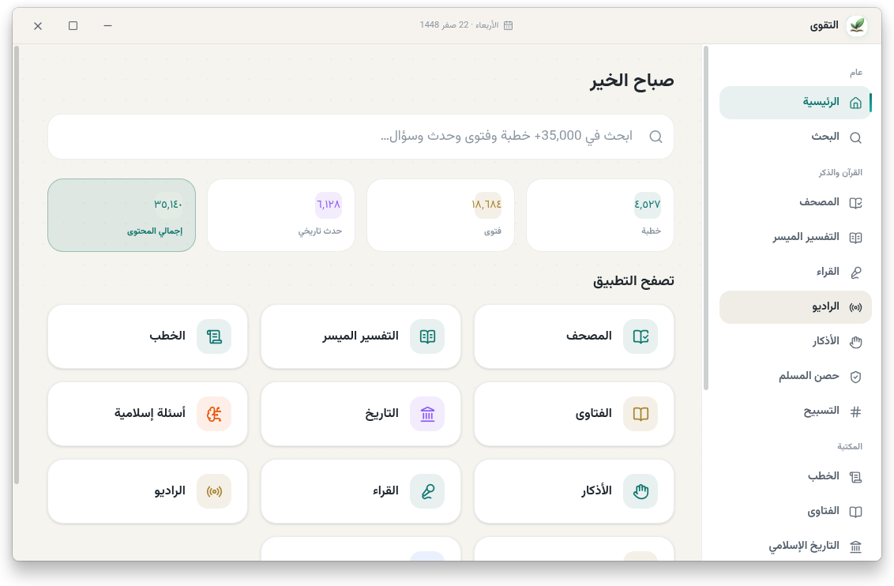

المصحف كاملاً
نص بخط عثماني (مجمع الملك فهد) مع التحكم بحجم الخط ووضع القراءة المريح، والتفسير الميسر بجانب كل آية.
تطبيق إسلامي متكامل يعمل دون اتصال بالإنترنت: المصحف كاملاً بخط عثماني، التفسير الميسر، الأذكار، حصن المسلم، مواقيت الصلاة، والمسبحة، ومكتبة تضم أكثر من 35,000 مادة — كلها محلياً على جهازك، بلا حسابات ولا تتبع ولا خوادم.
ميزات مصممة بعناية لتجربة استخدام فريدة، وكلها تعمل محلياً دون اتصال.
نص بخط عثماني (مجمع الملك فهد) مع التحكم بحجم الخط ووضع القراءة المريح، والتفسير الميسر بجانب كل آية.
أذكار الصباح والمساء مع تذكيرات صوتية في أوقاتها، وحصن المسلم الكامل بالأدعية المنقحة لكل موقف.
حساب محلي بعشر طرق حسابية — لا يُرسل موقعك لأي جهة — مع تنبيه وصوت الأذان عند دخول الوقت.
تسبيح بإحصائيات يومية وشهرية وسنوية، مع إمكانية إنشاء أذكار مخصصة وعدّاد تكرار.
أكثر من 35,000 مادة: خطب، فتاوى، كتب، تاريخ إسلامي، أسئلة ومسابقات — بنقّابة بحث ذكية بلا إنترنت.
تلاوات بث مباشر أو تحميل محلي للاستماع دون إنترنت، و177 إذاعة قرآنية متعددة القنوات.
تصحيح إملائي، اقتراحات، وترجيح دلالي (BM25) على كامل المكتبة — حتى مع الأخطاء الكتابية الشائعة.
تصميم عربي RTL أنيق مع وضع ليلي ونهاري متكاملين، وتبديل فوري بينهما.
كل البيانات محلية: لا حسابات، لا تتبع، لا خوادم طرف ثالث. عزل كامل للواجهة وإجبار HTTPS.
فحص تلقائي للإصدارات الجديدة من المستودع الرسمي، مع تنبيه أنيق وإمكانية الإيقاف من الإعدادات.
تاريخ هجري وميلادي دقيق، مدمج في الواجهة ليعرف المستخدم مواعيده وأيامه بسهولة.
كود مفتوح بالكامل بموجب رخصة GPL-3.0، مجاني إلى الأبد — مساهمة الجميع مرحب بها عبر GitHub.
واجهة عربية RTL أنيقة بوضعين ليلي ونهاري — قارن بنفسك.

جميع الملفات من صفحة الإصدارات الرسمية على GitHub — تُختم ويُتحقق منها قبل نشرها.
آخر إصدار: v4.0.1 — اضغط مباشرة للتحميل:
آخر إصدار: v4.0.1 — اضغط مباشرة للتحميل:
الأسهل والأكثر أماناً: تثبيت من المتاجر الرسمية مع تحديثات تلقائية.
ملاحظة عن العدّادات: GitHub Releases يعرض عدّاد تحميل رسمي لكل ملف ويُحتسب تلقائياً، بينما Flathub و Snap Store لا يوفران عدّادات تحميل عامة عبر واجهاتهم البرمجية، لذلك تُحتسب هنا تحميلات GitHub فقط لتجنّب الأرقام التخمينية.
مشروع مفتوح المصدر 100% — استنسخ، اطّلع، وحسّن:
259+ نجمة · رخصة GPL-3.0 · جميع البيانات مرفقة داخل المستودع (عبر Git LFS).
اختر الطريقة الأنسب لنظامك — الأمر بسيط وواضح.
$ sudo snap install altaqwaaتثبيت مباشر من Snap Store — يتحدث تلقائياً.
$ flatpak install flathub org.altaqwaa.Altaqwaaتثبيت من Flathub — يوفّر تحديثات وإزالة نظيفة.
$ chmod +x Altaqwaa-*.AppImage
$ ./Altaqwaa-*.AppImageبدون تثبيت: حمّل، اجعل الملف قابلاً للتنفيذ، وشغّله.
$ # Setup: فك الضغط ثم شغّل المثبّت
$ # Portable: فك الضغط ثم شغّل الملف مباشرةالمثبّت يتيح اختيار مجلد التثبيت، والمحمول يعمل دون تثبيت.
$ git lfs install # فعّل Git LFS (مرة واحدة)
$ git clone https://github.com/rn0x/altaqwaa-desktop.git
$ cd altaqwaa-desktop
$ npm install
$ npm startمهم: ملفات البيانات الكبيرة (القرآن، المكتبة، الصوتيات) مخزنة عبر Git LFS — بدون تفعيله لن يعمل التطبيق.
Electron + React 19 + Vite — تعليمات واضحة لبناء وتغليف كل الأنظمة.
$ npm install # تثبيت الاعتماديات
$ npm run dev # Vite + Electron (Hot Reload)
$ npm test # 27 اختباراً$ npm run build # بناء الواجهة
$ npm run packlinux # AppImage + deb + rpm + tar.gzيتطلب Node.js 20+ و Git LFS. على Fedora/RHEL ثبّت libxcrypt-compat.
$ npm run packwin # Setup.exe (NSIS) + Portable.exeالبناء من Linux يتطلب Wine لتضمين الأيقونة والمعلومات — أو ابنِ من Windows مباشرة.
$ npm run dist # كل الأنظمة
$ npm run clean # حذف مجلد البناءكل البيانات (36,206 مادة) تُضمَّن تلقائياً داخل الحزمة — لا حاجة لأي تحميل بعد التثبيت.
نعم، مجاني ومفتوح المصدر بالكامل بموجب رخصة GPL-3.0، وهو صدقة جارية — لا إعلانات، لا اشتراكات، لا بيانات يُجمعها أحد.
أغلب الميزات تعمل دون إنترنت تماماً: المصحف، التفسير، الأذكار، المكتبة كاملة، ومواقيت الصلاة (حساب محلي). فقط القراء والإذاعات (البث المباشر) تحتاج إنترنت — ويمكنك تحميل التلاوات للاستماع المحلي.
لا يوجد إصدار رسمي لـ macOS بعد — البناء يتطلب جهاز Mac أو خط CI مخصص. تابع صفحة الإصدارات لمعرفة الجديد، أو ابنِه من الكود المصدري على جهاز Mac بنفسك.
ملفات البيانات الضخمة (القرآن بالخط العثماني، المكتبة ~344MB، الصوتيات) مخزنة في المستودع عبر Git LFS. بدون تفعيله ستُستنسخ الملفات ناقصة ولن يعمل التطبيق.
تحمّل من صفحة الإصدارات الرسمية فقط (GitHub Releases / Flathub / Snap Store). جميع الملفات مبنية من الكود المصدري عبر أدوات موثوقة وروابط مباشرة من المستودع الرسمي.
يتحقق التطبيق تلقائياً من الإصدارات الجديدة على GitHub مرة كل 6 ساعات على الأكثر، ويظهر تنبيه أنيق عند توفر إصدار أحدث — ويمكنك إيقاف التنبيه من الإعدادات.
لا. حساب مواقيت الصلاة محلي 100% (10 طرق حسابية)، والإعدادات والبيانات كلها على جهازك. الواجهة معزولة تماماً عن النظام ولا تتواصل إلا عبر جسر آمن.
أهلاً بك! افتح المستودع على GitHub، اقرأ README، أبلغ عن الأخطاء أو اقترح ميزات في تبويب Issues، وساهم بطلبات الدمج (Pull Requests). يمكنك أيضاً دعم المطوّر عبر GitHub Sponsors.